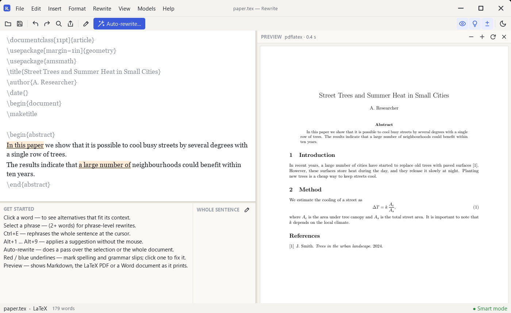

An offline Overleaf
alternative for LaTeX
The PDF beside your source, and rewording that never breaks a command.
Download Rewrite
Free, no account

What you get
- Live PDF preview, F5 rebuilds
- Commands, maths and citations are never changed
- Reword a sentence or the whole paper, then review
- Spelling and grammar in the prose only
- Export to Word, HTML, Markdown or PDF
- Works offline, no account
What it doesn't do
- Real-time collaboration
- A template gallery
- Its own TeX: install MiKTeX, MacTeX or TeX Live
- Git or Dropbox sync
FAQ
Do I need a TeX installation?
Yes, for the PDF preview and LaTeX exports. Editing and rewording work without one.
Will it break \cite or $...$?
No. Only the prose changes.
Can I share a project?
Not live. Send the .tex file or the exported PDF.
Also an alternative to QuillBot Grammarly Adobe Acrobat Microsoft Word.